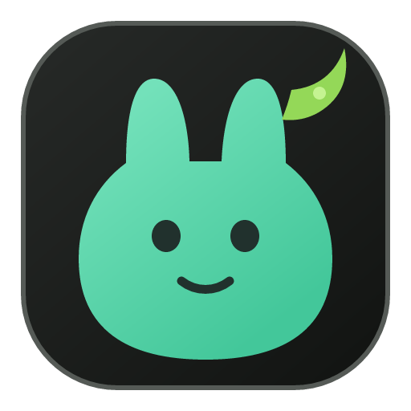

GPT · CodexNeeds you
Permission: run pytest tests/ — allow command?

Warren DownloadBuilt for OpenAI Build Week
Warren is a tiny desktop companion that watches Claude Code, Codex, and OpenCode across every VS Code window—so you always know what is working and what needs you.
Windows 10/11 VS Code 1.125+ Free & open source
Permission: run pytest tests/ — allow command?
Refactoring perception.py and updating tests…
Fixed checkout flow — 3 files changed.
Your attention layer for agentic coding.
One calm corner
Warren turns scattered terminal sessions into a single, quiet view of what matters now.
See independent agent sessions from multiple VS Code windows, grouped by workspace and kept correctly separated.
Select any agent and Warren brings its original VS Code window and terminal to the front.
Official hooks and plugins report prompts, permissions, completion, and failures—not guessed terminal output.
Local by design
Warren communicates through an in-memory broker on 127.0.0.1. It never stores full prompts, responses, source code, tool inputs, credentials, or terminal output.
Up and running
The desktop companion, VS Code bridge, and supported adapters are bundled together.
Run the Windows setup once. Warren installs the companion and VS Code bridge for you.
Reload each open window, then create a new integrated terminal in every workspace.
Launch Claude Code, Codex, or OpenCode as usual. Warren quietly keeps watch.
Make room for focus
Know when they are working, waiting, finished, or stuck—without breaking your flow.